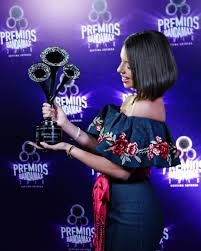

En 2012, con solo nueve años, lanzó Nueva Tradición, junto a su hermano Leonardo. Presentó cuatro canciones interpretadas por Leonardo y cuatro por Ángela.En 2016, participó en el festival 100 Mujeres de BBC en Ciudad de México. Con solo 13 años -era la artista más joven- le dijo a BBC News que la industria musical estaba dominada por hombres y que esperaba que eso cambiara. A partir de 2018, acompaña a su padre y su hermano en la gira Jaripeo sin fronteras. El 2 de marzo de 2018, lanzó su primer álbum en solitario, Primero soy mexicana (cuyo título está inspirado en la primera película de su abuela Flor), producido por su padre, Pepe. El álbum incluyó once canciones rancheras bien conocidas, previamente impregnadas por otros artistas musicales prominentes como Lucha Villa, Rocío Dúrcal, y su misma abuela. Realizó el primer sencillo del álbum, «Tu sangre en mi cuerpo» en los premios Tu Mundo 2018. El 20 de septiembre de 2018, fue nominada a Mejor Artista Nuevo y su álbum, Primero soy mexicana fue nominada a Mejor Álbum Ranchera/Mariachi en la 19 Entrega Anual del Grammy Latino. En la ceremonia, ella cantó "La Llorona", donde recibió una ovación del público y numerosos elogios de varios artistas, incluido el cantante mexicano Vicente Fernández . El 7 de diciembre de 2018, el álbum Primero soy mexicana, fue nominado para un Premio Grammy al Mejor Álbum de Música Regional Mexicana. El 3 de abril de 2019, fue nombrada representante artística y cultural de Zacatecas, por el alcalde Ulises Mejía Haro.1213 El 21 de mayo de 2019, fue nominada para tres rubros en los premios Juventud. Interpretó una melodía de canciones junto a los cantantes de mariachi Christian Nodal y Pipe Bueno.14 El 23 de julio de 2019, lanzó una presentación exclusiva de «Shallow» en la página de YouTube de la Academia de Grabación, con el permiso de la compositora, Lady Gaga. Fue la primera vez que grabó en inglés.
A.A.A. —todos los derechos reservados ©